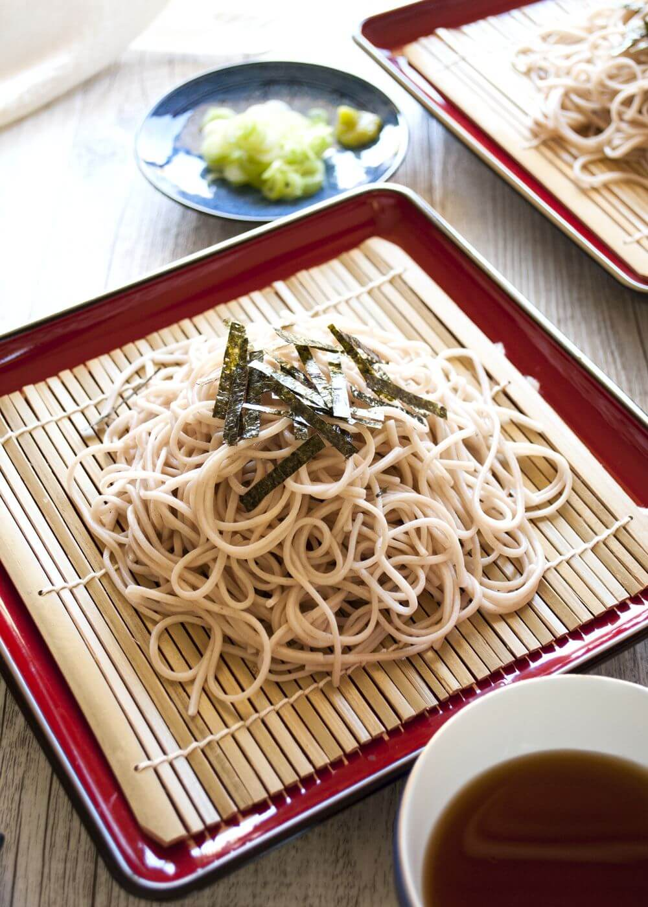

Todoroki's Zaru Soba

Description
This is an anime-inspired recipe from our hot and cold hero-in-training Shoto Todoroki, who's favorite food is a
zaru soba. A light and refreshing dish that contains cold, chewy soba noodles that pairs well with mentsuyu dipping sauce.
Ingredients
Servings: 2-4
Soba
- 500g dried soba noodles
- ice cold water
Sauce
- 1/4 cups sake
- 1/2 cups soy sauce
- 1/2 cups mirin
- 1/2 tbsp sugar
- 1 tsp dashi powder
- 1 cup of water
Optional
- 1 green onion, sliced for garnish
Instructions
Chicken Katsu
- Cook soba noodles. Follow package instructions.
- Strain soba noodles with ice-cold water
- In a small pot, bring sake to a boil and let the alcohol evaporate, over medium heat.
- Add soy sauce, mirin, sugar, dashi powder, and water, bring to a boil, and then lower temperature to a simmer over low heat. It should take 5 minutes.
- Serve the noodles and garnish with green onions (optional).
- For the small dipping cup, add 5 tbsp of mentsuyu and 100ml of water.